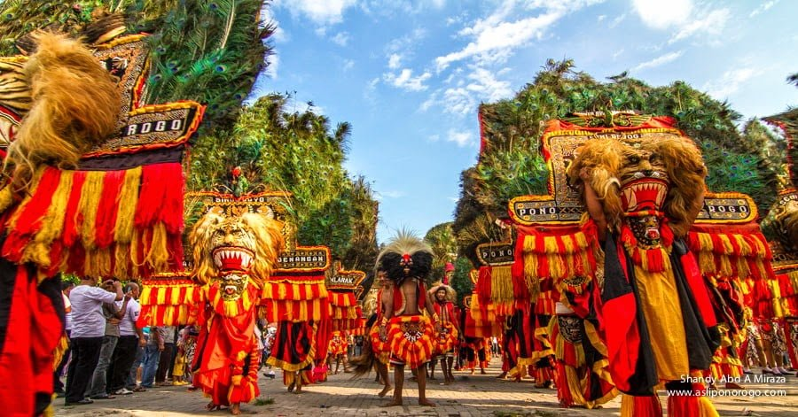

Portofolio
Desa Siman merupakan salah satu desa di Kabupaten Ponorogo yang memiliki semangat gotong royong yang sangat kuat. Kami berkomitmen untuk terus bertransformasi menjadi desa yang modern namun tetap menjaga kearifan lokal ponorogo .

Pesona Alam.
Keindahan persawahan hijau di Desa Siman yang menyejukkan mata.

Wisata Lokal.
Suasana damai di sekitar wilayah Desa Siman sebagai potensi wisata alam.

Adat Tradisional.
: Melestarikan arsitektur rumah khas Ponorogo sebagai warisan budaya Reog Ponorogo.

Pendidikan Desa.
Dukungan fasilitas pendidikan yang memadai bagi generasi muda desa.

Musyawarah Warga
Kegiatan rutin rembug desa untuk mendengarkan aspirasi seluruh warga.

Ekonomi Kreatif.
Pengembangan UMKM produk lokal asli Siman untuk kesejahteraan bersama..